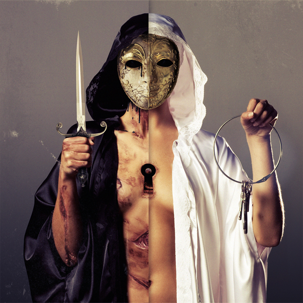
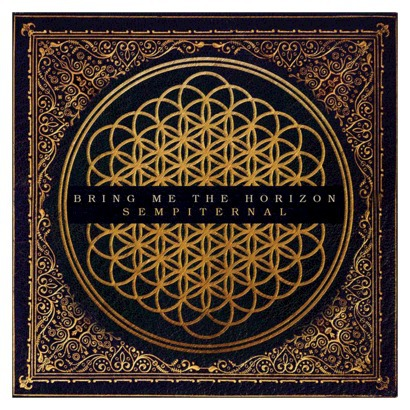

OUR ALBUMS
| Release date | Name | Songs list | Record company | |
| 2006 | Count Your Blessings — Listen now — |
|
Visible Noise |

|
| 2008 | Suicide Season — Listen now — |
|
Visible Noise |

|
| 2010 | There is a Hell, Believe me I've seen it. There is a Heaven, Let's Keep it a Secret — Listen now — |
|
Visible Noise |  |
| 2013 | Sempiternal — Listen now — |
|
RCA Records |  |
| 2015 | That's The Spirit — Listen now — |
|
RCA Records |